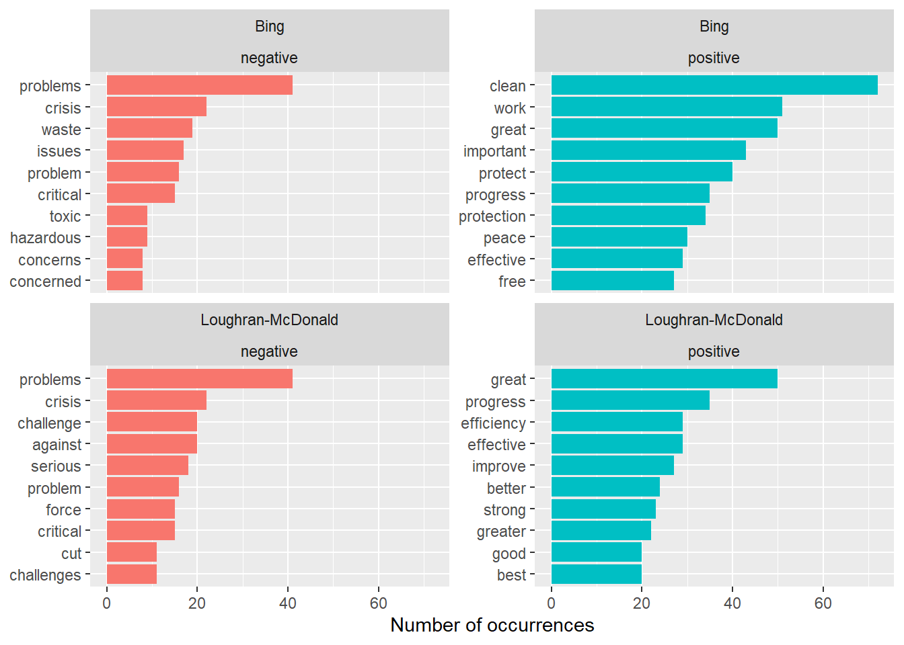

I’ll first reproduce the Text Mining with R’s Chapter 2 example on Jane Austen’s novels. Then I’ll extend the analysis by using State of the Union addresses from the sotu package. I plan to filter the speeches for sentences related to the environment, climate, and energy, and add the Loughran-McDonald lexicon to compare its classifications with the three lexicons used in the chapter. Speeches vary in length, so I’ll track sentiment by year and normalize the results per 100* words. I also expect some limitations due to differences in the lexicons’ domains and vocabulary coverage.
*There was an error in the first iteration of the approach. It should be 100, not 1,000
Warning in inner_join(., get_sentiments("bing")): Detected an unexpected many-to-many relationship between `x` and `y`.
ℹ Row 435434 of `x` matches multiple rows in `y`.
ℹ Row 5051 of `y` matches multiple rows in `x`.
ℹ If a many-to-many relationship is expected, set `relationship =
"many-to-many"` to silence this warning.
Joining with `by = join_by(word)`
Joining with `by = join_by(word)`
Warning in inner_join(., get_sentiments("nrc") %>% filter(sentiment %in% : Detected an unexpected many-to-many relationship between `x` and `y`.
ℹ Row 215 of `x` matches multiple rows in `y`.
ℹ Row 5178 of `y` matches multiple rows in `x`.
ℹ If a many-to-many relationship is expected, set `relationship =
"many-to-many"` to silence this warning.
Warning in inner_join(., get_sentiments("bing")): Detected an unexpected many-to-many relationship between `x` and `y`.
ℹ Row 435434 of `x` matches multiple rows in `y`.
ℹ Row 5051 of `y` matches multiple rows in `x`.
ℹ If a many-to-many relationship is expected, set `relationship =
"many-to-many"` to silence this warning.
bing_word_counts %>%group_by(sentiment) %>%slice_max(n, n =10) %>%ggplot(aes(n, reorder(word, n), fill = sentiment)) +geom_col(show.legend =FALSE) +facet_wrap(~sentiment, scales ="free_y") +labs(x ="Contribution to sentiment", y =NULL)
Extension with State of the Union speeches
Changes from the book: (1) a new corpus, State of the Union addresses (sotu package), filtered to sentences mentioning environment-related words; (2) a fourth lexicon, Loughran-McDonald, built for business and financial text.
Sentiment by year (Bing), normalized per 100 words. Raw counts mostly reflect how much a year talked about these topics, so scores are divided by total words.
year_words <- sotu_words %>%count(year, name ="total_words")sotu_sentiment <- sotu_words %>%inner_join(get_sentiments("bing")) %>%count(year, sentiment) %>%pivot_wider(names_from = sentiment, values_from = n, values_fill =0) %>%left_join(year_words, by ="year") %>%mutate(sentiment = (positive - negative) / total_words *100)
Joining with `by = join_by(word)`
ggplot(sotu_sentiment, aes(year, sentiment)) +geom_col() +labs(y ="Net sentiment per 100 words")
Joining with `by = join_by(word)`
Joining with `by = join_by(word)`
Warning in inner_join(., get_sentiments("nrc") %>% filter(sentiment %in% : Detected an unexpected many-to-many relationship between `x` and `y`.
ℹ Row 1338 of `x` matches multiple rows in `y`.
ℹ Row 3305 of `y` matches multiple rows in `x`.
ℹ If a many-to-many relationship is expected, set `relationship =
"many-to-many"` to silence this warning.
bind_rows( sotu_words %>%inner_join(get_sentiments("bing")) %>%mutate(method ="Bing"), sotu_words %>%inner_join(get_sentiments("loughran") %>%filter(sentiment %in%c("positive", "negative"))) %>%mutate(method ="Loughran-McDonald")) %>%count(method, sentiment, word) %>%group_by(method, sentiment) %>%slice_max(n, n =10, with_ties =FALSE) %>%ungroup() %>%ggplot(aes(n, reorder_within(word, n, list(method, sentiment)), fill = sentiment)) +geom_col(show.legend =FALSE) +scale_y_reordered() +facet_wrap(~method + sentiment, scales ="free_y") +labs(x ="Number of occurrences", y =NULL)
Joining with `by = join_by(word)`
Joining with `by = join_by(word)`

Conclusion
In the Bing sentiment by year graph, most years are above zero, so environment-related sentences are mostly net positive. Only a handful of years go negative: the mid-1790s, a few in the early 1900s, around 1919 and 1930, the mid-1980s, 1993, and about 2017. I wouldn’t attach causes to these without reading the sentences. The gaps are years with no matching sentences.
In the four lexicons graphs, the overall shape is broadly similar: mostly positive. They differ in level. NRC is almost always positive. Loughran-McDonald hovers near zero and dips below it most often. AFINN and Bing fall in between. They don’t agree on the most positive year. AFINN and Bing peak around 1887, while Loughran-McDonald and NRC peak around 1925.
In the words driving Bing vs. Loughran-McDonald graph, both lexicons agree on the main negative words (“problems,” “crisis,” “problem,” “critical”). Bing leans on environment-specific words. Its top positive word by far is “clean,” followed by “protect” and “protection,” and its negatives include “waste,” “toxic,” and “hazardous.” Loughran-McDonald leans on general or business-style words. Its positives include “efficiency,” “improve,” “better,” and “effective,” and its negatives include “challenge,” “against,” “serious,” “cut,” and “force.”
This was an interesting assignment to work on. I have done qualitative analysis on much smaller samples, such as interview transcripts and short answers, and when reviewing coworkers’ coding I noticed they often missed context when assigning sentiment. Lexicon-based analysis appears to have the same weakness. Applied to environment-related sentences in State of the Union addresses, all four lexicons showed a mostly positive tone, but they differed in level and in which year was most positive. This approach is useful for quantifying the perceived sentiment of words across a large amount of text, but it is still not well suited to qualitative work that requires deep understanding of context.
AI Assistance
Anthropic. (2026). Claude Sonnet 5.5 [Generative AI chat]. https://claude.ai/
Claude was used as a supplemental tool to help clarify the assignment requirements, plan the approach, choose the additional lexicon (Loughran-McDonald), and develop the R code adapting the Chapter 2 example to the new data. It also explained the code step by step and helped troubleshoot errors. I reviewed and ran the code, checked the output, and interpreted the results as part of my analysis.